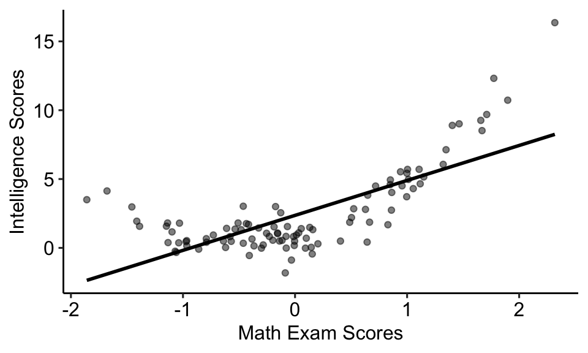
MGMT 30500: Business Statistics
Regression Analysis: Model Building
Overview
- General Linear Model
- Modeling Curvilinear Relationships
- Nonlinear Models That Are Intrinsically Linear - Transformations
- Multicollinearity – Effects and Example
Determining When to Add or Delete Variables
Variable Selection Procedures
- Backward Elimination Method
- All Best Subsets
- Backward Elimination Method
Interaction Effects
General Linear Model
General Linear Model
Models in which the parameters \((\beta_0, \beta_1, \ldots, \beta_p)\) all have exponents of one are called linear models.
A general linear model involving \(p\) independent variables (\(z_i\)’s) is:
\[ y = \beta_0 + \beta_1 z_1 + \beta_2 z_2 + \ldots + \beta_p z_p + \epsilon \]
where each independent variable \(z_i\) is a (linear or nonlinear) function of \(x_1, x_2, \ldots, x_k\) (the variables for which data have been collected).
- Here, \(y\) can be a function of the original response variable as well.
General Linear Model
The simplest case is when we have collected data for just one variable \(x_1\) and want to estimate \(y\) by using a straight-line relationship. In this case \(z_1 = x_1\).
This model is called a simple first-order model with one predictor variable.
\[ y = \beta_0 + \beta_1 x_1 + \epsilon \]
Modelling Curvilinear Relationships
Modelling Curvilinear Relationships
Modelling Curvilinear Relationships
Some non-linear models can be expressed as a general linear model.
To account for a curvilinear relationship, we might consider a second-order model with one predictor variable \((x_1)\):
\[ y = \beta_0 + \beta_1 x_1 + \beta_2 x_1^2 + \epsilon \]
- It is a linear model because we can set: \(z_1 = x_1\) and \(z_2 = x_1^2\).
Modelling Curvilinear Relationships
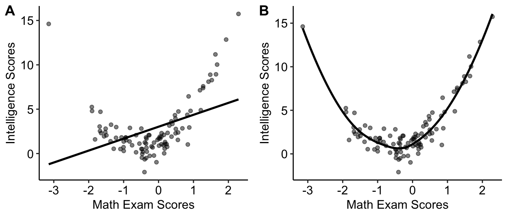
\[ y = \beta_0 + \beta_1 x_1 + \epsilon \]
\[ y = \beta_0 + \beta_1 x_1 + \beta_2 x_1^2 + \epsilon \]
Interpretation of Independent Variable Effect in a Second-Order Model
\(\beta_1\): Represents the linear effect of \(x_1\) on \(y\). It gives the initial (or marginal) change in \(y\) for a one-unit increase in \(x_1\) when \(x_1^2\) is held constant.
\(\beta_2\): Represents the quadratic effect of \(x_1\) on \(y\). It determines whether the curve opens upwards \((\beta_2 > 0)\) or downwards \((\beta_2 < 0)\).
Marginal Effect of \(x_1\)
- The overall effect of \(x_1\) on \(y\) can be expressed as:
\[ \frac{dy}{dx_1} = \beta_1 + 2\beta_2 x_1 \]
This shows that the effect of \(x_1\) on \(y\) changes as \(x_1\) increases or decreases due to the presence of the quadratic term \(x_1^2\).
Instead of a constant change (as in linear models), the presence of \(2\beta_2 x_1\) shows a varying slope depending on the value of \(x_1\).
Practical Interpretation
If \(\beta_2 > 0\), \(y\) increases at an increasing rate as \(x_1\) increases, resulting in a U-shaped curve.
If \(\beta_2 < 0\), \(y\) increases at a decreasing rate and then decreases, resulting in an inverted U-shaped curve.
The effect of \(x_1\) should always be considered in light of both \(\beta_1\) and \(\beta_2\).
Interaction
Interaction
- If the original data set consists of observations for \(y\) and two independent variables, \(x_1\) and \(x_2\), we might develop a second-order model with two predictor variables \((x_1\) and \(x_2)\) with interaction:
\[ y = \beta_0 + \beta_1 x_1 + \beta_2 x_2 + \beta_3 x_1 x_2 + \epsilon \]
The variable \(x_1 x_2\) is added to account for the potential effects of the two variables acting together.
\(\beta_3\) measures the interaction effect.
Example: Interaction
To provide an illustration of interaction and what it means, lets check the regression study conducted by Tyler Personal Care for one of its new shampoo products. Two factors believed to have the most influence on sales are:
Unit selling price
Advertising expenditure
To investigate the effects of these two variables on sales, prices of $2.00, $2.50, and $3.00 were paired with advertising expenditures of $50,000 and $100,000 in 24 test markets.
Example: Difference in Mean Sales
Mean Sales (1000s) for the Tyler Personal Care Example
| Advertising Expenditure | $2.00 | $2.50 | $3.00 |
|---|---|---|---|
| $50,000 | 461 | 364 | 332 |
| $100,000 | 808 | 646 | 375 |
With a price of $2.00, the difference in mean sales between advertising expenditures of $50,000 and $100,000 is:
\[ 808,000 - 461,000 = 347,000 \, units \]
When the price is $2.50, the difference is:
\[ 646,000 - 364,000 = 282,000 \, units \]
When the price is $3.00, the difference is:
\[ 375,000 - 332,000 = 43,000 \, units \]
Clearly, the difference in mean sales between advertising expenditures depends on the price of the product. The effect of increased advertising expenditure diminishes at higher selling prices, providing evidence of interaction between the price and advertising expenditure variables.
Example: Regression Model with Interaction
To account for the effect of interaction, we use the following regression model:
\[ y = \beta_0 + \beta_1 x_1 + \beta_2 x_2 + \beta_3 x_1 x_2 + \epsilon \]
Where:
- \(y\) = unit sales (1000s)
- \(x_1\) = price ($)
- \(x_2\) = advertising expenditure ($1000s)
Example: Estimated Regression Equation
Using the estimated regression equation:
\[ \text{Sales} = -275.8333 + 175 \, \text{Price} + 19.68 \, \text{AdvExp} - 6.08 \, \text{PriceAdv} \]
Where:
- Sales = unit sales (1000s)
- Price = price of the product ($)
- AdvExp = advertising expenditure ($1000s)
- PriceAdv = interaction term (Price times AdvExp)
Example: Significance of Interaction
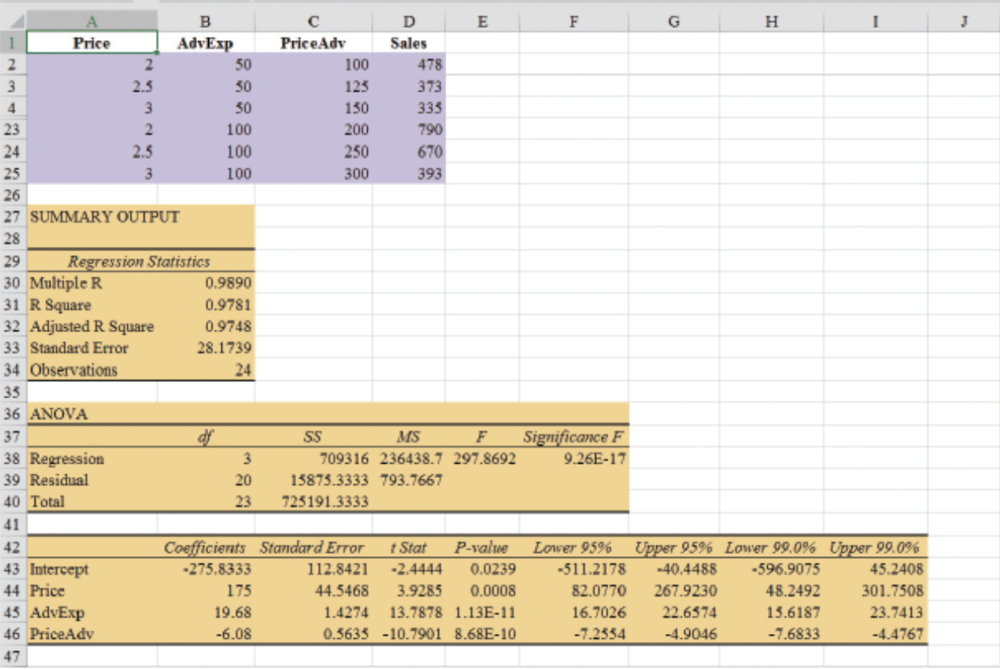
The \(p\)-value corresponding to the \(t\)-test for PriceAdv is 0.0000, which indicates significant interaction between the price of the product and the advertising expenditure.
Example: Interpretation of Coefficients
\(\beta_0\): Intercept. Represents the expected value of \(y\) when \(x_1\) and \(x_2\) are zero.
\(\beta_1\): Effect of \(x_1\) on \(y\) when \(x_2 = 0\).
\(\beta_2\): Effect of \(x_2\) on \(y\) when \(x_1 = 0\).
\(\beta_3\): Interaction effect between \(x_1\) and \(x_2\). Indicates how the relationship between \(x_1\) and \(y\) changes with different values of \(x_2\), and vice-versa.
Example: Marginal Effects
- Effect of \(x_1\):
\[ \frac{\partial y}{\partial x_1} = \beta_1 + \beta_3 x_2 \]
- Effect of \(x_2\):
\[ \frac{\partial y}{\partial x_2} = \beta_2 + \beta_3 x_1 \]
- The effect of \(x_1\) on \(y\) depends on \(x_2\), and the effect of \(x_2\) on \(y\) depends on \(x_1\).
Example: Interpretation of Interaction Effect
If \(\beta_3 > 0\), a positive (or negative) effect of \(x_1\) on \(y\) increases as \(x_2\) increases.
If \(\beta_3 < 0\), a positive (or negative) effect of \(x_1\) on \(y\) decreases as \(x_2\) increases.
Example: Coefficient Interpretation
Price: \(175\) - When AdvExp is zero, a one-unit increase in Price leads to an expected increase of 175 units in \(y\).
AdvExp: \(19.68\) - When Price is zero, a one-unit increase in AdvExp results in an expected increase of 19.68 units in \(y\).
PriceAdv: \(-6.08\)- Interaction effect: A one-unit increase in AdvExp decreases the effect of Price on \(y\) by 6.08 units (and vice versa).
Interpretation of Interaction Effect
The interaction term \(\beta_3\) (PriceAdv) is negative.
- As AdvExp increases, the positive effect of Price on \(y\) decreases.
- Suggests diminishing returns on Price when AdvExp is already high (or vice versa).
An increase in Advertising Expenditures may lead to higher sales, but this effect diminishes as more the Price increases.
The interaction effect is negative and significant, showing that the combined effect of Price and AdvExp on \(y\) is not purely additive.
Takeaway: Adjustments to Price or AdvExp should consider their interaction, as increasing both may not yield linear increases in \(y.\)
Log Transformation
Original Data
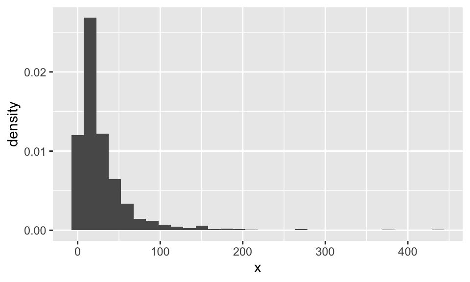
Log Transformation
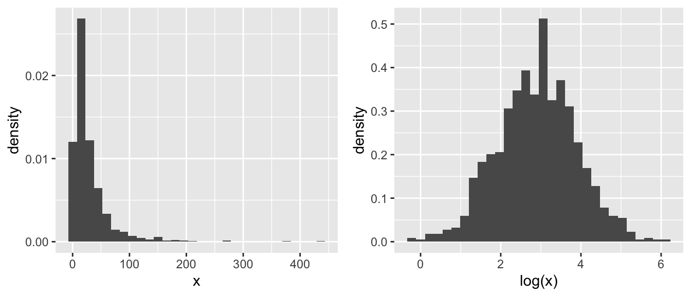
Possibile Logarithmic Transformations
| X | logX | |
|---|---|---|
Y |
linear \(\hat{Y}_i = \alpha + \beta X_i\) |
linear-log \(\hat{Y}_i = \alpha + \beta \log X_i\) |
logY |
log-linear \(\log \hat{Y}_i = \alpha + \beta X_i\) |
log-log \(\log \hat{Y}_i = \alpha + \beta \log X_i\) |
What Changes After the Transformation
You should be cautious when interpreting and reporting the findings of the model.
The interpretation varies based on the variable that was transformed (dependent variable, independent variable, or both).
As a general rule, you should always keep in mind the logic:
“What does a one-unit change in this transformed variable mean in terms of the original variable?”
Log Transformation Summary
| Model | Model Equation | Interpretation of \(\beta_1\) | Interpretation |
|---|---|---|---|
| Level-level | \(y = \beta_0 + \beta_1 x + \epsilon\) | \(\Delta y = \beta_1 \Delta x\) | A one-unit change in \(x\) results in a \(\beta_1\) unit change in \(y\) |
| Level-log | \(y = \beta_0 + \beta_1 \log(x) + \epsilon\) | \(\Delta y = (\beta_1 / 100) \% \Delta x\) | A 1% change in \(x\) results in a \(\beta_1/100\) unit change in \(y\) |
| Log-level | \(\log(y) = \beta_0 + \beta_1 x + \epsilon\) | \(\%\Delta y = (100\beta_1) \Delta x\) | A one-unit change in \(x\) results in a \(\beta_1\%\) change in \(y\) |
| Log-log | \(\log(y) = \beta_0 + \beta_1 \log(x) + \epsilon\) | \(\%\Delta y = \beta_1 \% \Delta x\) | A 1% change in \(x\) results in a \(\beta_1\%\) change in \(y\) |
Example: Log Transformation
Predict Miles-Per-Gallon (MPG) according to the automobile Weight (in pounds):
\[ \text{MPG} = 56.0957 - 0.0116 \times \text{Weight} \]
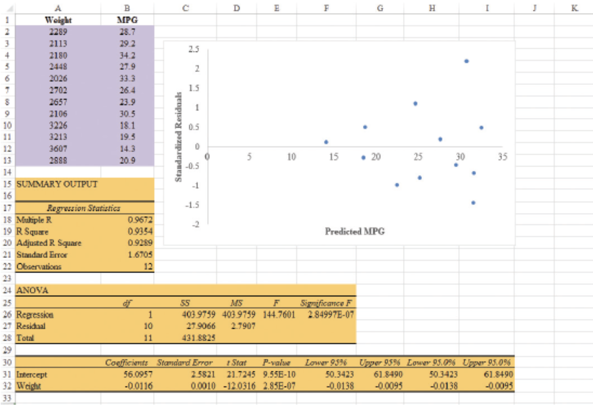
The pattern does not look like the the horizontal band we should expect to find if the assumptions about the error term are valid.
Variability in the residuals appears to increase as the value of \(\hat{y}\) increases.
\[ \text{LnMPG} = 4.5242 - 0.0005 \times \text{Weight} \]
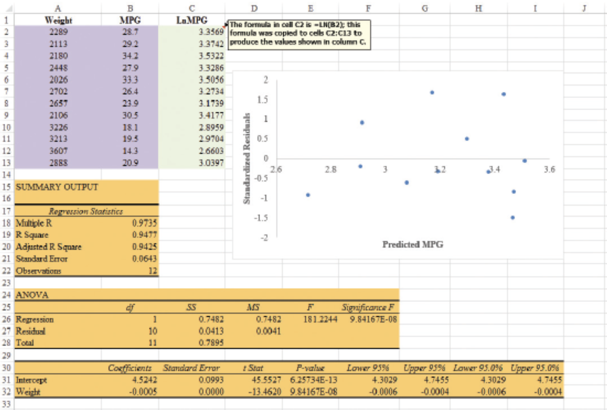
The wedge-shaped pattern disappeared.
The model with the logarithm of miles per gallon as the dependent variable provides an excellent fit to the oberved data.
Nonlinear Models That Are Intrinsically Linear
Nonlinear Models That Are Intrinsically Linear
Models in which the parameters \(\beta_0, \beta_1, \ldots, \beta_p\) have exponents other than one are called nonlinear models.
For the case of the exponential model, we can perform a transformation of variables that will enable us to perform regression analysis using the general linear model.
The exponential model involves the following regression equation:
\[ E(y) = \beta_0 \beta_1^x \]
This model is appropriate when the dependent variable \(y\) increases or decreases by a constant percentage, instead of by a fixed amount, as \(x\) increases.
Example of Exponential Model
Suppose sales for a product \(y\) are related to advertising expenditure \(x\) (in $1000s) according to the following regression equation:
\[ E(y) = 500(1.2)^x \] Thus,
- for \(x = 1\), \(E(y) = 500(1.2)^1 = 600\)
- for \(x = 2\), \(E(y) = 500(1.2)^2 = 720\)
- for \(x = 3\), \(E(y) = 500(1.2)^3 = 864\)
Note that \(E(y)\) is not increasing by a constant amount in this case, but by a constant percentage. The percentage increase is 20%.
Logarithmic Transformation of the Model
We can transform this nonlinear model to a linear model by taking the natural logarithm of both sides of the equation:
\[ \ln E(y) = \ln \beta_0 + x \ln \beta_1 \]
Linearized Model
Now, if we let \(y' = \ln E(y)\), \(\beta'_0 = \ln \beta_0\), and \(\beta'_1 = \ln \beta_1\), we can rewrite the equation as:
\[ y' = \beta'_0 + \beta'_1 x \]
The formulas for simple linear regression can now be used to develop estimates of \(\beta'_0\) and \(\beta'_1\). Denoting the estimates as \(b'_0\) and \(b'_1\), leads to the following estimated regression equation:
\[ \hat{y'} = b'_0 + b'_1 x \]
To obtain predictions of the original dependent variable \(y\) given a value of \(x\), we would first substitute the value of \(x\) into the equation above to compute \(\hat{y'}\), and then raise \(e\) to the power of \(\hat{y'}\) to obtain the prediction of \(y\), or the expected value of \(y\), in its original units.
Linearized Model - Example Prediction
Given the estimates:
\(b'_0 = 3.5\)
\(b'_1 = 0.2\)
Let’s predict \(y\) when the advertising expenditure \(x = 5\) (in $1000s).
Using the linearized equation we calculate \(y'\):
\[ y' = b'_0 + b'_1 \cdot x = 3.5 + 0.2 \cdot 5 = 4.5 \]
Now, exponentiate \(y'\) to get the predicted \(y\):
\[ y = e^{4.5} \approx 90.02 \]
Thus, the predicted sales \(y\) when the advertising expenditure is 5 (in $1000s) is approximately 90 units (in $1000s).
Other Transformations to Consider
Other Transformations to Consider
- Square-root: \(\sqrt{x}\)
- Logarithmic: \(\log_{10}(x), \log_{10}(y), \ln(x)\), etc.
- Reciprocal: \(1/y, 1/x\)
- Exponential: \(e^x, e^y\)
- Square: \(x^2, y^2\)
- Power: \(x^k, y^k\)
Square-Root Transformation
Add or use \(\sqrt{x}\) term or \((x^{0.5})\)
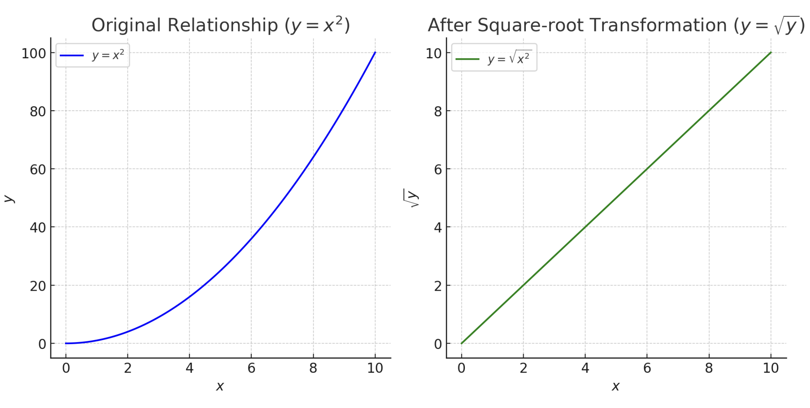
Logarithmic Transformation
Add or use \((\ln(x) \text{ or } \log(x))\) term.
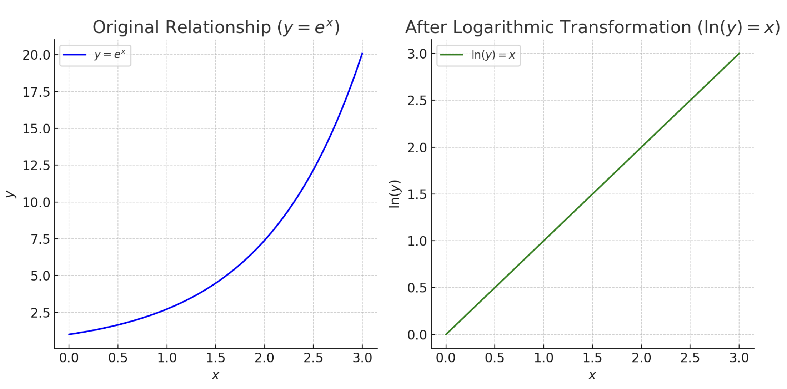
Reciprocal Transformation
Add or use \(1/x\) term.
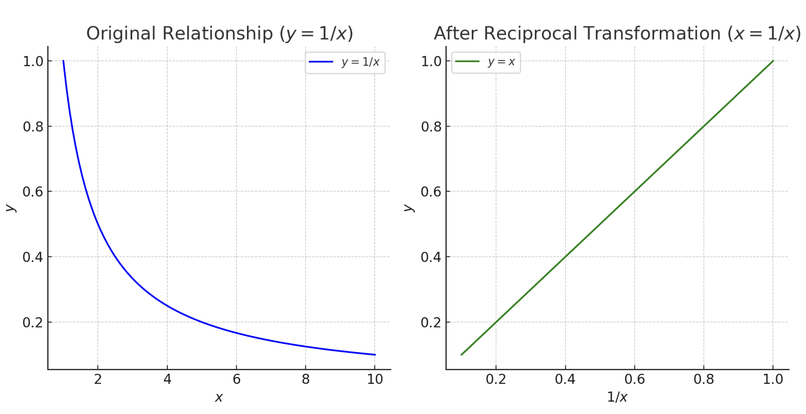
Exponential Transformation
Change \(y\) to \(\ln(y)\) as the new response variable.
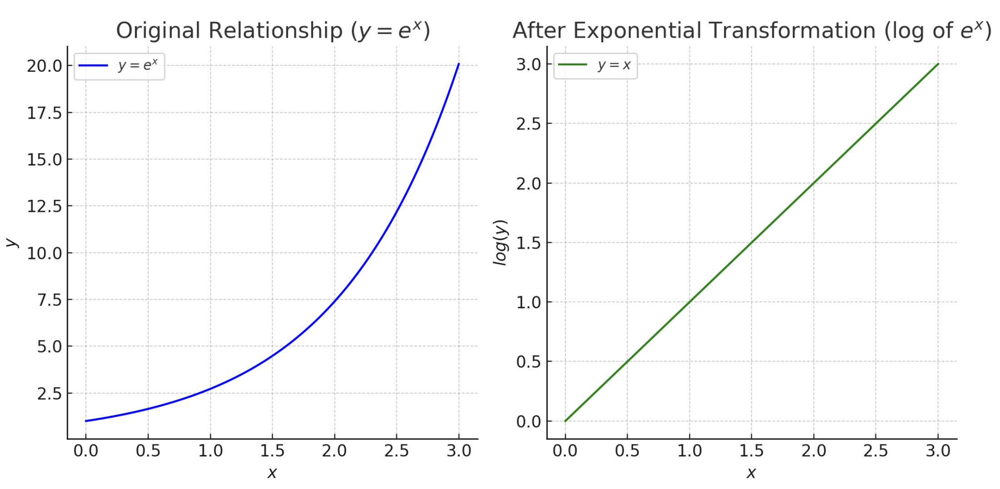
Power Transformations
Add \(x^2\) or \(x^k\) term.
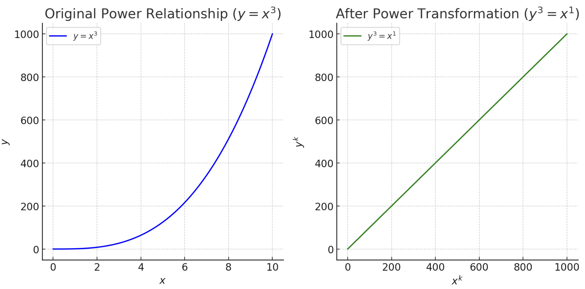
When to Add or Delete Variables
Strategies for Adding or Removing Variables
| # | Strategy | Description | Add Variables | Remove Variables |
|---|---|---|---|---|
| 1 | P-Value | Based on statistical significance | If p-value < 0.05 | If p-value > 0.05 |
| 2 | Adjusted R-Squared | Checks if model fit improves | If adjusted \(R^2\) increases | If adjusted \(R^2\) decreases |
| 3 | F-Test | Compares models with and without added variables | If F-test indicates significant improvement | If F-test shows no significant improvement |
| 4 | AIC or BIC | Balances model fit and complexity | If AIC/BIC decreases | If AIC/BIC increases |
| 5 | Stepwise Regression | Automated selection procedure based on statistical contribution | Add variables with high statistical contribution | Remove variables with low contribution |
| 6 | Multicollinearity (VIF) | The Variance Inflation Factor detects multicollinearity between independent variables | Use the full model | If VIF > 10 |
| 7 | Cross-Validation | Assesses model performance across different data subsets | If cross-validation performance improves | If cross-validation performance worsens |
| 8 | Good vs Bad Controls | For causal inference purposes | Add good controls that help block non-causal paths | Remove bad controls that open new spurious paths |
| 9 | Theoretical Justification | Adds or removes variables based on theory, domain knowledge, or experience | Add based on theory or domain knowledge | Remove variables that are irrelevant, regardless of statistical significance |
Adding or Removing Variables
We will focus on the following:
- Stepwise regression
- Forward selection
- Backward elimination
- Best-subsets regression.
The first three procedures are iterative; at each step, a single independent variable is added or deleted, and the new model is evaluated. The process continues until a stopping criterion indicates that the procedure cannot find a better model.
The best-subsets procedure is not a one-variable-at-a-time procedure; it evaluates regression models involving different subsets of the independent variables.
Adding Variables in Regression Models: F-test
We can use an F-test to determine whether it is advantageous to add one or more independent variables to a multiple regression model.
This is based on determining the reduction in the error sum of squares (SSE) resulting from adding variables.
The null and alternative hypotheses are defined as:
\[ H_0: \beta_{q+1} = \beta_{q+2} = \cdots = \beta_p = 0 \]
\[ H_a: \text{One or more of the parameters is not equal to zero} \]
where \(q\) is the number of independent variables in the first model.
Adding Variables in Regression Models: F-test
Let’s illustrate this using the Butler Trucking example.
The regression equation with miles traveled \(x_1\) as the only independent variable is:
\[ \hat{y} = 1.2739 + 0.0678x_1 \]
The error sum of squares for this model is:
\[ SSE(x_1) = 8.0287 \]
Adding Variables in Regression Models: F-test
When the number of deliveries \(x_2\) is added, the regression equation becomes:
\[ \hat{y} = -0.8687 + 0.0611x_1 + 0.9234x_2 \]
The error sum of squares for this model is:
\[ SSE(x_1, x_2) = 2.2994 \]
Adding Variables in Regression Models: F-test
The reduction in SSE from adding \(x_2\) to the model is:
\[ SSE(x_1) - SSE(x_1, x_2) = 8.0287 - 2.2994 = 5.7293 \]
We can conduct a F-test to determine if this reduction is significant:
\[ F = \frac{\frac{SSE(x_1) - SSE(x_1, x_2)}{1}}{\frac{SSE(x_1, x_2)}{n - p - 1}} \]
Adding Variables in Regression Models: F-test
Substituting the values:
\[ F = \frac{5.7293}{1} \Big/ \frac{2.2994}{7} = 17.44 \] Where,
- \(n = 10\)
- \(p = 2\)
Conclusion from F-Test
Using Excel, we obtain a \(p\)-value of \(0.0042\) for the calculated F-statistic. Since the \(p\)-value is less than the significance level \(\alpha = 0.05,\) we reject the null hypothesis. Thus, adding \(x_2\) results in a significant reduction in SSE.
The t-test and F-test are equivalent when only one independent variable is being added, and we can use either to assess significance.
Adding Variables in Regression Models: F-test
In the stepwise regression, forward selection, and backward elimination procedures, the criterion for selecting an independent variable to add or delete from the model at each step is based on the F-statistic.
Suppose we are considering adding \(x_2\) to a model involving \(x_1\) or deleting \(x_2\) from a model involving \(x_1\) and \(x_2\). To test whether the addition or deletion of \(x_2\) is statistically significant, the null and alternative hypotheses can be stated as follows:
\[ H_0: \beta_2 = 0 \]
\[ H_a: \beta_2 \neq 0 \]
Adding Variables in Regression Models: F-test
We saw that:
\[ F = \frac{{SSE(x_1) - SSE(x_1, x_2)}}{1} \div \frac{{SSE(x_1, x_2)}}{n - p - 1} \]
can be used as a criterion for determining whether the presence of \(x_2\) in the model causes a significant reduction in the error sum of squares.
The p-value corresponding to this F-statistic is used to determine whether an independent variable should be added or deleted from the regression model. The usual rejection rule applies: Reject \(H_0\) if p-value \(\leq \alpha\).
Stepwise Regression
Stepwise Regression
The stepwise regression procedure begins each step by determining whether any of the variables already in the model should be removed.
It does so by first computing an F-statistic and corresponding p-value for each independent variable in the model.
Refering to the level of significance \(\alpha\) for determining whether an independent variable should be removed from the model as p Value to Leave, if the p-value for any independent variable is greater than p Value to Leave, the independent variable with the largest p-value is removed, and the stepwise regression procedure begins a new step.
Stepwise Regression Process
If no independent variable can be removed from the model, the procedure attempts to enter another independent variable into the model.
It does so by first computing an F-statistic and corresponding p-value for each independent variable that is not in the model.
Refering to the level of significance \(\alpha\) for determining whether an independent variable should be entered into the model as p Value to Enter.
The independent variable with the smallest p-value is entered into the model provided its p-value is less than p Value to Enter. The procedure continues in this manner until no independent variables can be deleted from or added to the model.
Stepwise Regression Limitations
Because the one-at-a-time procedures do not consider every possible subset for a given number of independent variables, they will not necessarily select the model with the highest R-Square value.
In summary, at each step of the stepwise regression procedure, the first consideration is to see whether any independent variable can be removed from the current model. If none of the independent variables can be removed from the model, the procedure checks to see whether any of the independent variables that are not currently in the model can be entered.
Stepwise Regression Considerations
Because of the nature of the stepwise regression procedure, an independent variable can enter the model at one step, be removed at a subsequent step, and then enter the model at a later step.
The procedure stops when no independent variables can be removed from or entered into the model.
Stepwise Regression Example
Let’s consider a dataset with the following variables:
- Income: Household income (in $1000s)
- Age: Age of the head of the household
- Education: Years of education
- Spending: Annual spending on goods (dependent variable)
Initial Model
We start by considering an initial model with Income as the only predictor of Spending.
\[ Spending = \beta_0 + \beta_1 \cdot Income + \epsilon \]
Using an F-statistic and p-value, we find Income is significant, so we keep it in the model.
Stepwise Regression Example
Next, we calculate the p-values for the remaining variables (Age and Education) and check if any of them can be added to the model.
After calculating, we find that Education has the lowest p-value and is significant, so we add it to the model:
\[ Spending = \beta_0 + \beta_1 \cdot Income + \beta_2 \cdot Education + \epsilon \]
Stepwise Regression Example
Now, we compute the p-values for both Income and Education. If either variable has a high p-value (e.g., \(p > 0.05\)), we remove it from the model.
In this case, both Income and Education remain significant.
Stepwise Regression Example
We continue this process by adding Age to the model if it is significant, or removing variables if their significance drops. The process continues until no more variables can be added or removed.
Stepwise Regression Example
After completing the procedure, our final model could look like this:
\[ Spending = \beta_0 + \beta_1 \cdot Income + \beta_2 \cdot Education + \epsilon \]
Here, Income and Education are the only significant predictors of Spending.
Summary of Stepwise Procedure
- Start: Begin with one variable and calculate p-values.
- Add: Add the variable with the lowest p-value, provided it’s below the threshold.
- Remove: Remove variables if their p-values become too high.
- Stop: Stop when no more variables can be added or removed.
Forward Selection
Forward Selection
The forward selection procedure starts with no independent variables. It adds variables one at a time using the same procedure as stepwise regression for determining whether an independent variable should be entered into the model.
However, the forward selection procedure does not permit a variable to be removed from the model once it has been entered.
The procedure stops when the p-value for each of the independent variables not in the model is greater than p Value to Enter.
Forward Selection Limitations
No Removal of Variables: Once a variable is entered into the model, it cannot be removed, even if later additions make it less significant. This could result in keeping variables that are not optimal for the final model.
Ignores Multicollinearity: Forward selection does not account for multicollinearity between independent variables. High correlations among predictors may lead to unstable coefficients and misleading results.
Greedy Approach: The procedure focuses on adding one variable at a time based on immediate statistical improvement, which might lead to suboptimal global models. It might overlook combinations of variables that would better explain the dependent variable.
Model Overfitting: Forward selection increases the risk of overfitting, especially when the dataset has many variables. This results in a model that fits the training data too closely but performs poorly on new data.
Assumes Independence of Variables: The procedure assumes that variables can be assessed one by one for entry, without considering how combinations of variables interact. This might ignore important interactions between variables that could improve model performance.
Backward Elimination
Backward Elimination
The backward elimination procedure begins with a model that includes all the independent variables.
It then deletes one independent variable at a time using the same procedure as stepwise regression. However, the backward elimination procedure does not permit an independent variable to be reentered once it has been removed.
The procedure stops when none of the independent variables in the model has a p-value greater than p Value to Leave.
Backward Elimination Limitations
No Reentry of Variables: Once a variable is removed from the model, it cannot be reentered, even if later stages show that it might be significant. This could lead to models that miss important predictors.
Ignores Multicollinearity: Backward elimination does not take into account multicollinearity between variables. High correlations between predictors can result in unreliable coefficient estimates.
Overfitting Risk: By starting with all variables and only eliminating those that don’t meet the p-value threshold, there is a higher risk of overfitting. The model may fit the training data too closely but generalize poorly to new data.
Dependent on Initial Model: The procedure is highly dependent on the initial model, which includes all variables. Poor choices in the initial set of variables can lead to suboptimal models.
May Lead to Different Models: Different elimination paths could lead to different final models, and not all of them may be optimal. Backward elimination might overlook variable interactions and combinations that forward selection would have considered.
Best-Subsets Regression
Best-Subsets Regression
Many statistical software packages have a procedure called best-subsets regression that enables the user to find, given a specified number of independent variables, the best regression equation.
Typical output from such packages will enable the user to identify:
The two best one-variable estimated regression equations,
The two best two-variable regression equations,
The two best three-variable regression equations, and so on.
The criterion used in determining which estimated regression equations are best for any number of predictors is usually the value of the adjusted coefficient of determination.
Notes + Comments
Interaction Variables: Functions of the independent variables can be used to create new independent variables for use with any of the procedures in this section.
- For instance, if we wanted \(x_1 x_2\) in the model to account for interaction, we would use the data for \(x_1\) and \(x_2\) to create the data for \(z = x_1 x_2\).
Limitations of Procedures: None of the procedures that add or delete variables one at a time can be guaranteed to identify the best regression model.
- However, they are excellent approaches to finding good models—especially when little multicollinearity is present.
Software Implementation: The stepwise, forward selection, backward elimination, and best-subsets approaches to building a regression model can be implemented in Excel.
However, this would be very inefficient as each approach would potentially require several steps in which various models based on what was learned in the previous step would have to be estimated.
Most statistical software (including
R) are capable of implementing each of these algorithms automatically.
Interaction Effect: An Example
A company is currently using two advertising media (magazines and newspapers) to advertise its product and plans to increase its current advertising expenditure by $50,000.
The company likes to determine: - Which of the two advertising media can be expected to give a better return for the extra money spent (i.e., “bigger bang for the buck”)? - What is the expected return from this additional $50,000?
Advertising Effectiveness
Exposure: Effective exposure index (The higher, the better.)
Type: Type of advertising media
Expenditure: Advertising expenditure ($1000)
| Exposure | Expenditure | Type |
|---|---|---|
| 965 | 600 | Magazine |
| 340 | 260 | Magazine |
| 155 | 160 | Magazine |
| 120 | 130 | Magazine |
| 145 | 155 | Magazine |
| 35 | 100 | Magazine |
| 620 | 530 | Newspaper |
| 700 | 585 | Newspaper |
| 485 | 395 | Newspaper |
| 350 | 275 | Newspaper |
| 595 | 420 | Newspaper |
| 310 | 200 | Newspaper |
| 190 | 150 | Newspaper |
The company wants to increase the current advertising expenditure by $50,000, which advertising method should it use?
Exposure vs. Expenditure (by Type)
XXX include figure XXXX
- Blue: Magazine
- Red: Newspaper
Dummy Variables and Interaction
| Exposure | Expenditure | Type | Magazine | Newspaper | Expenditure*Magazine |
|---|---|---|---|---|---|
| 965 | 600 | Magazine | 1 | 0 | 600 |
| 340 | 260 | Magazine | 1 | 0 | 260 |
| 155 | 160 | Magazine | 1 | 0 | 160 |
| 120 | 130 | Magazine | 1 | 0 | 130 |
| 145 | 155 | Magazine | 1 | 0 | 155 |
| 35 | 100 | Magazine | 1 | 0 | 100 |
| 620 | 530 | Newspaper | 0 | 1 | 0 |
| 700 | 585 | Newspaper | 0 | 1 | 0 |
| 485 | 395 | Newspaper | 0 | 1 | 0 |
| 350 | 275 | Newspaper | 0 | 1 | 0 |
| 595 | 420 | Newspaper | 0 | 1 | 0 |
| 310 | 200 | Newspaper | 0 | 1 | 0 |
| 190 | 150 | Newspaper | 0 | 1 | 0 |
- Create dummy variables, Magazine and Newspaper, and use, say, Newspaper as the reference category.
The Linear Regression Model
\[ Exposure = \beta_0 + \beta_1 \text{Expenditure} + \beta_2 (\text{Magazine}) + 0 (\text{Newspaper}) + \beta_3 (\text{Expenditure} * \text{Magazine}) + \epsilon \]
\[ E(\text{Exposure}) = \begin{cases} (\beta_0 + \beta_2) + (\beta_1 + \beta_3)\text{Expenditure} & \text{If Magazine} \ \beta_0 + (\beta_1)\text{Expenditure} & \text{If Newspaper} \end{cases} \]
- The coefficient of the interaction \((\beta_3)\) is the difference in the slopes.
- If \(\beta_3 > 0\), Magazine has a larger slope and hence, a better return.
ANOVA Table
H0: β1 = β2 = β3 = 0 (No relationship of Exposure with Expenditure and Type.)
Regression Statistics Table
| Regression Statistics | Values |
|---|---|
| Multiple R | 0.995 |
| R Square | 0.990 |
| Adjusted R Square | 0.987 |
| Standard Error | 30.940 |
| Observations | 13 |
ANOVA Table
| ANOVA | df | SS | MS | F | Significance F |
|---|---|---|---|---|---|
| Regression | 3 | 886457.432 | 295485.811 | 308.668 | 0.000 |
| Residual | 9 | 8615.645 | 957.294 | ||
| Total | 12 | 895073.077 |
Regression Table
Regression Coefficients Table
| Coefficients | Standard Error | t Stat | P-value |
|---|---|---|---|
| Intercept | 56.295 | 30.470 | 1.848 |
| Expenditure | 1.118 | 0.077 | 14.501 |
| Magazine | -193.051 | 37.252 | -5.182 |
| Expenditure * Magazine | 0.719 | 0.107 | 6.731 |
\[ \text{Predicted Exposure} = 56.295 + 1.118 \times \text{Expenditure} - 193.051 \times \text{Magazine} + 0.719 \times \text{Expenditure} \times \text{Magazine} \]
Predicted Exposure
\[ \text{Predicted Exposure} = 56.295 + 1.118 \times \text{Expenditure} - 193.051 \times \text{Magazine} + 0.719 \times \text{Expenditure} \times \text{Magazine} \]
- Newspaper (Magazine = 0)
\[ \text{Predicted Exposure} = 56.295 + 1.1178 \times \text{Expenditure} \]
- Magazine (Magazine = 1)
\[ \text{Predicted Exposure} = (56.295 - 193.051) + (1.1178 + 0.719) \times \text{Expenditure} \]
Conclusions
- Which media is predicted to give a better expected return for the additional $50,000?
- What is the expected return for this $50,000?
Determining When to Add or Delete Variables
To determine if we should add \(x_2\) to a model involving \(x_1\) (or delete \(x_2\) in a model involving both \(x_1\) and \(x_2\)), we perform a partial \(F\)-test to test the significance of this candidate variable \(x_2\).
- When there is only one candidate variable, the partial \(F\)-test is equivalent to a \(t\)-test.
One can consider adding or deleting several independent variables as a group or a subset.
The test is used in variable selection for model building.
The test is used to handle multicollinearity issue.
Partial F-test: Significance of a Subset of Independent Variables (1 of 3)
Null Hypothesis:
- Variables in the subset do not improve significantly the model when all other variables are included.
(Their regression coefficients are all zero: No linear relationship).
The model with all involved independent variables is called the full model.
The model without the candidate independent variables is called the reduced model. It is the model assuming the null hypothesis is true.
Partial F-test: Significance of a Subset of Independent Variables (2 of 3)
\[ \text{Partial } F = \frac{\text{SSE(reduced) - SSE(full)}}{\text{number of variable(s) in the subset}} \times \frac{1}{\text{MSE(full)}} \]
\[ \text{Partial } F = \frac{\text{SSE}(x_1) - \text{SSE}(x_1, x_2)}{\text{SSE}(x_1, x_2)/(n-p-1)} \text{ for } x_2 \text{ in our example.} \]
Partial F-test: Significance of a Subset of Independent Variables (3 of 3)
The partial \(F\)-statistic follows an \(F\)-distribution with degrees of freedom (# of variable(s) in the subset) and \(d.f.\) of MSE, if \(H_0\) is true.
The \(p\)-value criterion can also be used to determine whether it is advantageous to add one or more dependent variables to a multiple regression model.
The \(p\)-value associated with the computed \(F\) statistic can be compared to the level of significance \(\alpha\).
To determine the \(p\)-value:
\[ = 1 - \text{F.DIST}(\text{partial } F\text{-value, numerator df, denominator df, TRUE}) \]
Illustrative Example: Testing \(x_2\) and \(x_3\) in the Presence of \(x_1\)
- Null Hypothesis
\[ H_0: \beta_2 = \beta_3 = 0 \]
\[ H_a: \text{ at least one of } \beta_2 \text{ and } \beta_3 \text{ is not 0.} \]
- Full model
\[ Y = \beta_0 + \beta_1 x_1 + \beta_2 x_2 + \beta_3 x_3 + \epsilon \]
- Reduced model (assume \(H_0\) is true)
\[ Y = \beta_0 + \beta_1 x_1 + \cancel{\beta_2 x_2} + \cancel{\beta_3 x_3} + \epsilon \]
SSR for Full and Reduced Models
- Full model:
\[ \hat{Y} = 210.02 + 18.08 x_1 + 9.46 x_2 + 9.03 x_3 \]
Full Model SSR Table
| SSR for Full Model | df | SS |
|---|---|---|
| Regression | 3 | 45271.11 |
| Residual | 26 | 15308.09 |
| Total | 29 | 60579.20 |
Reduced Model SSR Table
| SSR for Reduced Model | df | SS |
|---|---|---|
| Regression | 1 | 20104.00 |
| Residual | 28 | 40475.00 |
| Total | 29 | 60579.20 |
Partial F-test
Full Model
| df | SS |
|---|---|
| Regression | 3 |
| Residual | 26 |
| Total | 29 |
Reduced Model
| df | SS |
|---|---|
| Regression | 1 |
| Residual | 28 |
| Total | 29 |
Partial F Calculation
\[ Partial \, F = \frac{{SSR(Full) - SSR(Reduced)}}{{df(Full) - df(Reduced)}} / \frac{{MSE(Full)}}{26} = \frac{{45271.11 - 20104.00}}{3 - 1} / \frac{15308.09}{26} = 21.37 \]
p-value Calculation
\[ p-value = 1 - F.DIST(21.37, 2, 26, TRUE) = 3.24287E-06 \]
Conclusion: We reject \(H_0\) at 5% significance level and conclude at least one of \(\beta_2\) and \(\beta_3\) is not zero.
AmountSpent vs Income (2 of 11)
Scatterplot of AmountSpent vs Income
plot(income, amountspent, main=“Scatterplot of AmountSpent vs Income”, col=“red”, pch=19, xlab=“Income”, ylab=“AmountSpent”)
Summary
Summary
Some key takeaways from this session:
- XXXX